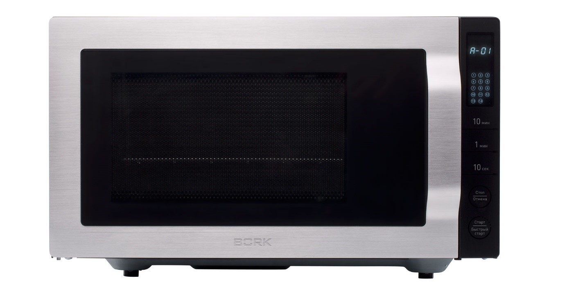
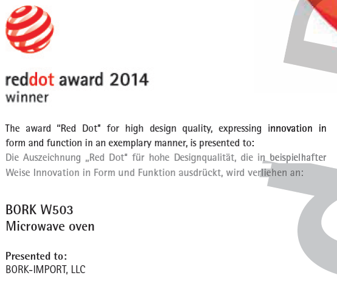
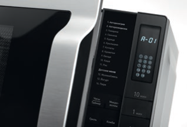
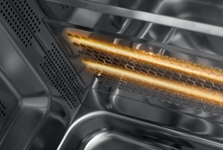
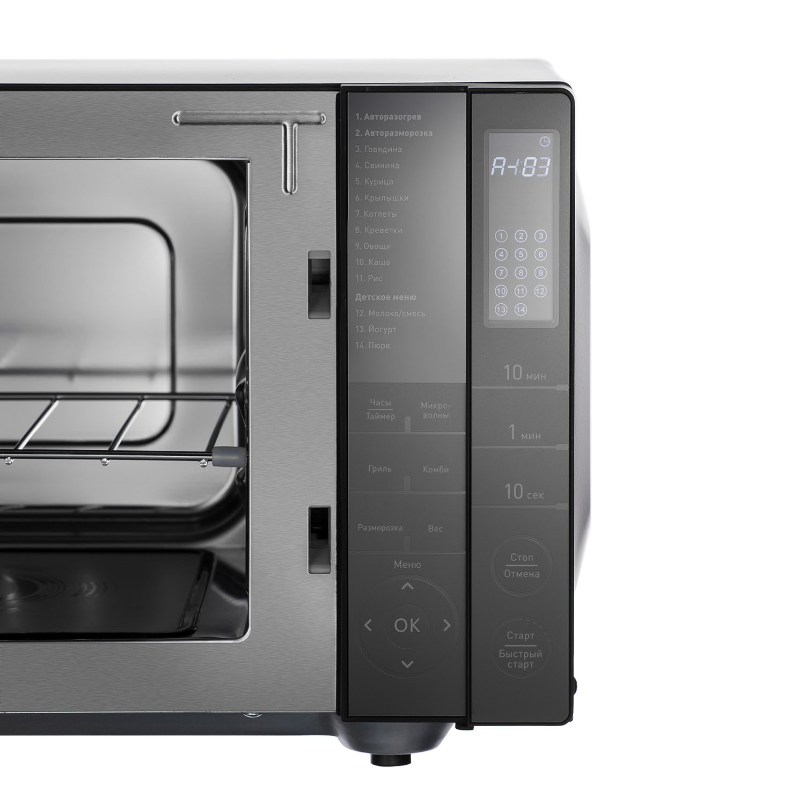
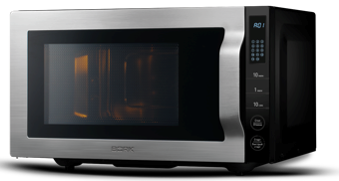

Микроволновая печь BORK W503
Аргументы для продажи
Награда RedDot за дизайн, качество, инновации в формах и функциональности.
Сенсорное управление
Печь оснащена сенсорной панелью управления. На LCD-дисплее отображаются автоматические программы, выбранный режим, мощность, время готовности и все дополнительные функции.
Кварцевый гриль
Часы
Настройка часов
- Для настройки часов в режиме 24 или 12 нажмите кнопку Часы.
- Установите необходимое время с помощью цифровой клавиатуры: 10 мин → 1 мин → 10 сек
- Затем нажмите кнопку Часы для подтверждения настройки.
Замок от детей
При включении защитного режима кнопки микроволновой печи блокируются.
- Нажмите и удерживайте кнопку Стоп/Отмена в течение 3 секунд.
Экспресс-приготовление
Данный режим позволяет упростить задачу при приготовлении или разогревании несложных блюд. Максимальное время приготовления — 10 минут.
- Установите посуду на основание микроволновой печи.
- Для начала приготовления нажмите кнопку Старт/Быстрый старт. При каждом ее нажатии Время увеличивается на 1 минуту.
Приготовление с помощью микроволн
Данная функция подходит для разогрева, варки и тушения большинства видов блюд.
Максимальное время приготовления — 99 минут 50 секунд.
Приготовление на гриле
Функция гриля оптимальна для приготовления большинства мясных блюд, горячих сэндвичей и запеканок. Решетка для гриля обеспечивает оптимальные условия приготовления продуктов.
Максимальное время приготовления — 99 минут 50 секунд. При приготовлении в режиме Гриль продукты рекомендуется переворачивать. В середине процесса приготовления прозвучит сигнал, переверните продукт и нажмите кнопку Старт/Быстрый старт для продолжения процесса приготовления.
Поэтопное приготовление
Данная функция позволяет запрограммировать микроволновую печь на приготовление блюд в несколько этапов. Функция поэтапного приготовления позволяет сочетать любые два режима.
Комбинированное приготовление
Комбинированные режимы позволяют совмещать разные виды тепловой обработки при приготовлении одного блюда.
Максимальное время — 99 минут 50 секунд.
Функция отложенного старта
Данная функция позволяет приготовить блюдо к определенному времени.
Разморозка
В данном режиме вы можете быстро разморозить продукты, в зависимости от установленного времени.
Максимальное время приготовления — 99 минут 50 секунд.
Автоматическое приготовление
Данный режим позволяет приготовить любимое блюдо без установки времени и мощности. Достаточно указать тип продукта и вес.
Технические характеристики

Мощность:
1400 Вт (микроволны),
1000 Вт (гриль)
Выходная мощность микроволн: 900 Вт
Рабочая частота: 2450 МГц
Габариты (В.Ш.Г): 287.490.387 мм
Объем печи: 25 л
Вес: 14,1 кг
Сделано в Китае